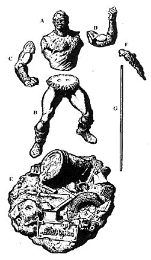
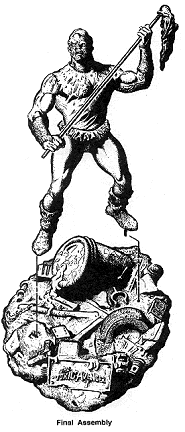

Drill.
INVENTORY OF PARTS
- A) Torso/Head
- B) Legs
- C) Right Arm
- D) Left Arm
- E) Base
- F) Mop Head
- G) Mop Handle

MODEL BUILDING INSTRUCTIONS
Preparation
Step 1
Refer to the Parts Inventory List to verify that you have all parts you
will need for assembly.
Step 2
Mold flashing may be trimmed from parts by gently scraping along
the mold line with the dull edge of your X-Acto Knife. Mold lines
and other surface imperfections can be removed by wet sanding or
by gently buffing with a finishing grade sandpaper.
Step 3
Test assemble all parts to check for proper fit. Trim and adjust fit
with sandpaper, hobby file or Dremel tool.
Step 4
Scrub all parts in warm soapy water. Oil, dirt or mold release can
impair the model's paint job.
Assembly
Step 5
Drill both hands to the diameter of the mop handle, as shown:

Step 6
6)Assemble the unpainted parts as shown in the diagram. Use 5
minute epoxy or super glue for all connections. Use glue sparingly
and avoid getting it on your hands or on the surface of the model.
This kit may be completely assembled pnor to painting or can be
done as a series of sub assemblies. Sub assembly of parts for
painting purposes may be done as follows:
Sub Assembly 1: Attach arms (C & D) to Torso/Head (A). Use
Mop handle (G) to establish proper positioning of arm connections.
Once glue has set, remove the mop handle and set aside.
Sub Assembly 2: Next, attach the Legs (B) to the aforementioned
Torso/Arm assembly.
Sub Assembly 3: Glue Mop Head (F) to Mop Handle (G)
Sub Assemblies and remaining parts can he painted separately and glued
together alter they have been painted.

Step 7
You may fill seams or surface imperfections with 2-Part epoxy putt.
Mix the putty according to the instructions oll its box and press it into any
seams gaps or holes in the surface. Wetting your fingers or using a wet
toothpick will give you a smoother finish and prevent the putty from
sticking to your fingers or tools. Do not proceed with painting until all
putty fill has hardened and been finish sanded.
Finishing
Step 8
Coat the entire model with surface primer. This will fill
small pin holes, highlight flaws in puttying and sanding and
provide a uniform surface for painting.
Step 9
Make sure the primer has completely dried before applying
color. We recommend water based acrylic paint which should
be available at your local hobby or art/craft store.
Reter to the box label for a suggested color scheme or create
your own. We suggest use of an inexpensive watercolor
paintbrush for paint application, a quality fine point brush for
detail work and an older or cheaper brush for dry brushing.
Rather than applying one heavy coat of paint it is preferable to
apply several thin coats. This will minimize the appearance of
paint drips and brush smokes.
The following methods will help to "professionalize" your paint job...
Shading wash
is a technique that will achieve a sense of depth,
define wrinkles and textures and will help to give Toxic
Avenger's clothing its trademarked Soiled appearance. After
applying base coat mix the base coat color with a small touch
of black (or other dark color). Now thin this new color until it
reaches the consistency of milk. Apply this wash to the model
only where the effect is desired. Note how the thinned paint
gathers in the crevices and textured areas. Continue to apply
coats of wash until desired effect is achieved but be sure to
allow each coat to dry completely before applying the next.
Dry brushing
will allow you to highlight bumps and wrinkles.
To do this you should first apply a base coat ot your selected
color. Now mix a lighter version of the same color by mixing
in some white (or other light color) paint. Soak an old paintbrush
with the new color. Immediately begin rubbing it on a
paper towel until all paint seems to have been removed
rendering the paintbrush almost dry. Briskly sweep the brush
over the desired area and notice the wonderful highlights that
begin to appear.
Step 10
Complete final assembly and attach the figure to the base.
Base mounting is best accomplished by using small metal pins
or by clipping off small segments of coat hanger. Drill holes in
the base and bottom of the feet to match the pin's diameter.
Insert the pins into the base and Glue the feet to the base with
the pins in position.

Step 11
Spray the completed model with a matte finish lacquer.
This will protect the paint on the model from rubbing off.
Gloss lacquer can he used to "spot" details such as eyes teeth
and toxic waste.

The Gremlins in the Garage webzine is a production of
Firefly Design. If you have any questions or comments please
get in touch.
Copyright © 1994-1997
Firefly Design.